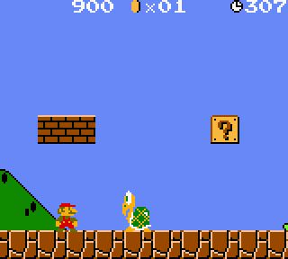

Super Mario Bros. fue diseñado por Shigeru Miyamoto, lanzado en 1985 y producido por la compañía Nintendo, para la NES. El juego describe las aventuras de dos fontaneros, Mario y Luigi, quienes deben rescatar a la Princesa Peach, que fue secuestrada por el rey de los koopas, Bowser. A través de ocho diferentes niveles de juego, los jugadores pueden controlar a alguno de los dos hermanos y deben enfrentarse finalmente a cada uno
de los monstruos de cada castillo para liberar a Peach. 
Super Mario Bros. fue el juego que popularizó al personaje de Mario, convirtiéndolo en el ícono principal de Nintendo, y uno de los personajes más reconocidos de los videojuegos. Además, apareció por primera vez la Princesa Peach, Toad, Bowser, entre otros personajes. Este juego es considerado el primer videojuego de plataformas de desplazamiento lateral de Nintendo y se ha convertido en un hito debido a la trascendencia de su diseño y papel en la industria de los videojuegos.